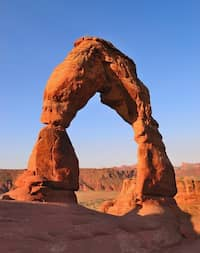

Utah
Utah is known for its natural diversity and is home to features ranging from arid deserts with dunes to thriving pine forests in mountain valleys. It is a rugged and geographically diverse state at the convergence of three distinct geological regions: the Rocky Mountains, the Great Basin, and the Colorado Plateau. It is known for great skiing, and the Great Salt Lake. In addition, Utah has five national parks: Arches, Bryce Canyon, Canyonlands, Capital Reef, and Zion.